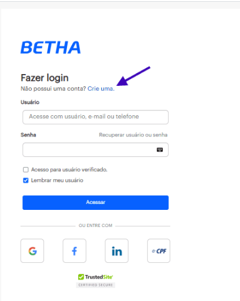
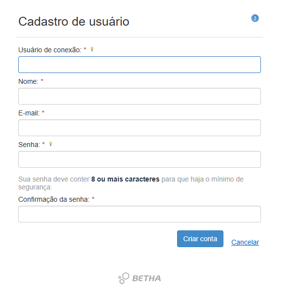
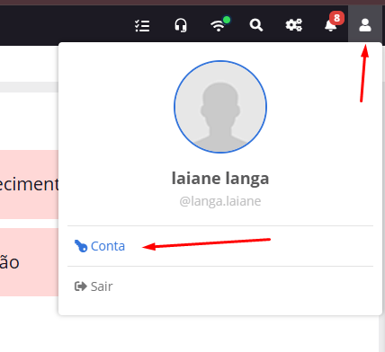
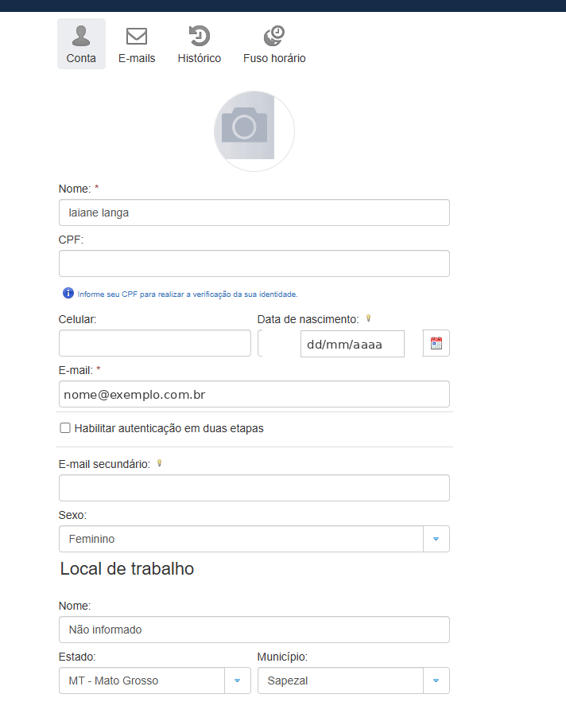

Passo a passo para criar sua conta e liberar o acesso aos sistemas Betha da entidade.
1. O que é
Para acessar qualquer sistema Cloud da Betha (Contábil, Folha, Compras, Conecta, entre outros), é preciso primeiro ter uma conta na Central do Usuário. É esse cadastro que serve de login único para todos os sistemas.
Atenção
Criar a conta não dá acesso a nenhum sistema automaticamente. Depois de cadastrado, é necessário informar seu usuário ao responsável pelas liberações na entidade para que os acessos sejam concedidos.
2. Passo a passo do cadastro
1 Acessar a Central do Usuário
Acesse o endereço betha.cloud e clique em Não possui uma conta?.
Ou acese direto pelo endereço gov.betha.com.br/centraldousuario

Tela de login — o link de cadastro fica abaixo de "Fazer login".
2 Preencher os dados e criar a conta
Uma nova tela é aberta para inserir suas informações (nome, e-mail, CPF, telefone, senha). Depois de preencher tudo, clique em Criar conta.

Tela de cadastro de usuário.
Senha Precisa ter 8 ou mais caracteres para garantir o mínimo de segurança.
3 Confirmar o cadastro pelo e-mail
Ao concluir a etapa anterior, aparece um aviso de que é preciso validar o cadastro pelo e-mail informado.
Um e-mail de confirmação é enviado logo em seguida.
Abra o e-mail e clique em Confirmo meu cadastro.
Você será direcionado para a tela de login.
Prazo
Se o cadastro não for confirmado pelo e-mail, ele é excluído automaticamente em até sete dias.
Importante
Confirme o cadastro assim que possível — é essa confirmação que permite vincular seu usuário às soluções Betha usadas pela entidade (Contábil, Folha, Compras, Conecta etc.).
3. Depois de cadastrar: liberação de acesso
Com a conta criada e confirmada, o cadastro por si só ainda não libera nenhum sistema.
4 Informar o cadastro ao responsável de TI Usuário
Comunique ao servidor responsável na entidade — o diretor do departamento de TI — que seu usuário foi criado.
Informe o nome de usuário cadastrado, para que ele providencie as liberações necessárias.
Sem a liberação, não há acesso
Enquanto as liberações não forem feitas, ao tentar entrar em qualquer sistema você receberá uma mensagem pedindo um código serial — isso significa que o usuário ainda não tem permissão em nenhum sistema.
5 Liberação dos sistemas Responsável de TI
O responsável concede o acesso no sistema específico que você vai usar no dia a dia, podendo liberar só algumas funcionalidades ou incluir o usuário em grupos com permissões já definidas.
4. Completar os dados na Central do Usuário
Depois que o acesso for liberado e você já estiver logado em qualquer sistema Betha, também é possível voltar à Central do Usuário para completar o cadastro — sem precisar sair pelo endereço de login novamente.
6 Acessar "Conta" pelo menu do usuário
Com qualquer sistema Betha aberto, clique no ícone de usuário no canto superior direito e depois em Conta.

Menu do usuário, disponível em qualquer sistema Betha já logado.
7 Completar os dados cadastrais
A tela de Conta da Central do Usuário é aberta, com os campos ainda em branco disponíveis para preencher: CPF, celular, data de nascimento, sexo, local de trabalho, entre outros.

Tela de Conta — dados complementares do cadastro.
Não é obrigatório na hora Esses campos podem ser completados depois, quando for conveniente — não bloqueiam o uso dos sistemas já liberados.
5. Dúvidas frequentes
Criei a conta e já consigo acessar os sistemas?
Não. É preciso confirmar o cadastro pelo e-mail e, depois, avisar o responsável de TI para que ele libere o acesso a cada sistema.
Ao tentar entrar em um sistema, aparece pedido de código serial. O que fazer?
Essa mensagem aparece quando o usuário ainda não tem nenhuma liberação. Avise o responsável de TI passando seu usuário cadastrado na Central do Usuário.
Não recebi o e-mail de confirmação.
Confira a caixa de spam. Se não encontrar e o prazo de sete dias vencer, será preciso refazer o cadastro.
Posso entrar com CPF em vez do usuário?
Sim, mas só depois de vincular o e-CPF à conta, marcando a opção de acesso para usuários qualificados na tela de login.